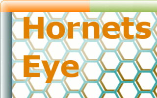

Installation
HornetsEye consists of several packages. Most of them rely on other free software since HornetsEye does not reinvent the wheel.

GNU/Linux
First you need to install the build tools and Ruby 2.1 with development headers. It is also recommended to install libswscale-dev. Under Debian you can do this using the following command:
sudo aptitude install build-essential ruby ruby-dev rubygems-integration rake libswscale-dev libboost-dev
If you want to retrieve sources, it is recommended to install the Git version control system:
sudo aptitude install git-core
It is possible to install a newer version of rake using Rubygems:
sudo gem install rake
malloc
malloc is part of the basis of HornetsEye. The following command will download and install this Ruby extension:
sudo gem install malloc
multiarray
multiarray is part of the basis of HornetsEye. It provides the array operations of HornetsEye. The following command will download and install this Ruby extension:
sudo gem install multiarray
hornetseye-frame
hornetseye-frame is part of the basis of HornetsEye. It provides the necessary colourspace conversions for doing image I/O. This Ruby extension requires the software scaling library. You can install it like this:
sudo aptitude install libswscale-dev
To install the Ruby extension, use the following command:
sudo gem install hornetseye-frame
hornetseye-alsa
hornetseye-alsa provides an interface for playing and recording audio data using the Advanced Linux Sound Architecture (ALSA). This Ruby extension requires the ALSA library. You can install it like this:
sudo aptitude install libasound2-dev
To install the Ruby extension, use the following command:
sudo gem install hornetseye-alsa
hornetseye-dc1394
hornetseye-dc1394 allows capturing video frames using a DC1394-compatible firewire camera. This Ruby extension requires the DC1394 development headers. You can install them as follows:
sudo aptitude install libdc1394-22-dev
To install the Ruby extension, use the following command:
sudo gem install hornetseye-dc1394
hornetseye-ffmpeg
hornetseye-ffmpeg is useful for reading and writing video files with optional audio data. This Ruby extension requires the development headers for FFMpeg and the software scaling library. You can install them as follows:
sudo aptitude install libavformat-dev libswscale-dev
To install this Ruby extension, use the following command:
sudo gem install hornetseye-ffmpeg
hornetseye-fftw3
hornetseye-fftw3 is a wrapper for doing Fast Fourier Transforms using the FFTW3 library. This Ruby extension requires the development headers for FFTW3. You can install them as follows:
sudo aptitude install libfftw3-dev
To install this Ruby extension, use the following command:
sudo gem install hornetseye-fftw3
hornetseye-kinect
hornetseye-kinect allows to capture images from a Microsoft Kinect sensor using the libfreenect library. This Ruby extension requires libfreenect:
sudo aptitude install libfreenect-dev
To install this Ruby extension, use the following command:
sudo gem install hornetseye-kinect
hornetseye-linalg
hornetseye-linalg provides conversions between Linalg::DMatrix (provided by linalg) and Hornetseye::MultiArray. You can install it as follows:
sudo aptitude install liblapack-dev libblas-dev libf2c2-dev
You also need to install the linalg Ruby extension. You can install it as follows:
git clone https://github.com/wedesoft/linalg.git
cd linalg
sudo ruby install.rb
cd ..
To install hornetseye-linalg, use the following command:
sudo gem install hornetseye-linalg
hornetseye-narray
hornetseye-narray provides conversions between NArray (provided by narray) and Hornetseye::MultiArray. You can install it as follows:
sudo gem install hornetseye-narray
If you have not used RubyGems to install NArray, you may have to install hornetseye-narray from source:
git clone git://github.com/wedesoft/hornetseye-narray.git
cd hornetseye-narray
rake
sudo rake install
cd ..
hornetseye-opencv
hornetseye-opencv provides conversions between OpenCV::CvMat (provided by opencv) and Hornetseye::MultiArray. You need to install OpenCV first as follows:
sudo aptitude install libcv-dev libcvaux-dev libhighgui-dev libffcall1-dev
To install this Ruby extension, use the following command:
sudo gem install hornetseye-opencv
If you are unable to use RubyGems to install opencv, you may have to install hornetseye-opencv from source:
git clone git://github.com/wedesoft/hornetseye-opencv.git
cd hornetseye-opencv
rake
sudo rake install
cd ..
See https://github.com/wedesoft/ruby-opencv for more information on how to install opencv for Ruby.
hornetseye-openexr
hornetseye-openexr is useful for reading and writing EXR image files. EXR is a file format for high dynamic range images. This Ruby extension requires the OpenEXR development headers. You can install them as follows:
sudo aptitude install libopenexr-dev
To install this Ruby extension, use the following command:
sudo gem install hornetseye-openexr
hornetseye-qt4
hornetseye-qt4 implements a Qt4 widget (compatible with qtruby4) for hardware accelerated video output. This Ruby extension requires Qt4, QtRuby4 and the software scaling library. You can install them as follows:
sudo aptitude install libqt4-ruby1.8 libqt4-dev qt4-dev-tools libswscale-dev xserver-xorg-dev libxv-dev libxpm-dev
You need to install hornetseye-qt4 from source:
git clone git://github.com/wedesoft/hornetseye-qt4.git
cd hornetseye-qt4
rake
sudo rake install
cd ..
hornetseye-rmagick
hornetseye-rmagick provides file-I/O using the RMagick Ruby extension. RMagick requires the ImageMagick development headers. You can install them as follows:
sudo aptitude install libmagickwand-dev
To install this Ruby extension, use the following command:
sudo gem install hornetseye-rmagick
hornetseye-v4l2
hornetseye-v4l2 is a wrapper for accessing webcams and frame grabbers. It requires the Video for Linux development headers. You can install them as follows:
sudo aptitude install linux-libc-dev
To install this Ruby extension, use the following command:
sudo gem install hornetseye-v4l2
hornetseye-xorg
hornetseye-xorg facilitates display of videos and images under X.Org. It requires the X.Org and Mesa development headers. You can install them as follows:
sudo aptitude install xserver-xorg-dev libxv-dev libxpm-dev libgl1-mesa-dev libglu1-mesa-dev
To install this Ruby extension, use the following command:
sudo gem install hornetseye-xorg
Microsoft Windows
HornetsEye for Microsoft Windows is not supported at the moment. The GDI and DirectShow support of the old (monolithic) version needs to be ported.
Mac OS
malloc and multiarray where tested successfully under Mac OS. However there is no active support for MaC OS at the moment.
External Links
- Ruby Gems
- Git repositories